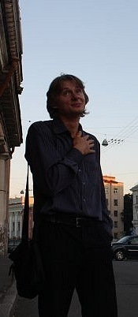

Пушкарев Алексей Юрьевич

Дата рождения: 15 сентября 1986 г. (29 лет)
Домашний адрес: УР, с. Завьялово, ул. Янтарная, 35
Семейное положение, дети: женат, сын Петр 2015 г.р.
Образование: высшее
«Ижевский государственный технический университет», Приборостроительный факультет, дневная форма
- квалификация Инженер по специальности «Проектирование и технология радиоэлектронных средств»